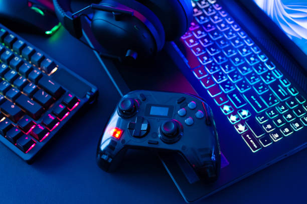
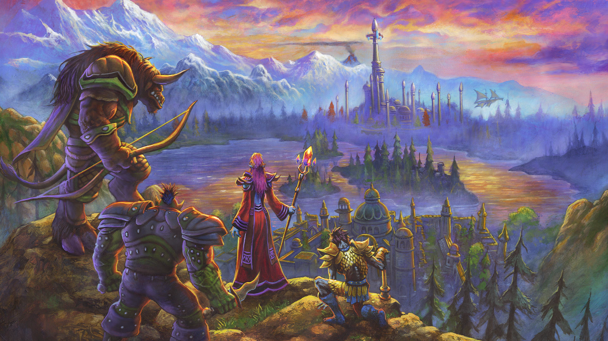

Mina hobbys!


Som ni kanske gott ser så är jag lite av en nörd och har alltid vart.
Det började med att jag hemma hos kusinen fick testa på CS 1.6,
efter det så var man fast i det och började där efter med WoW som
fortfarande idag är favoritspelet.
Nedan kommer en nördig liten förklaring kring 4 klasser jag valt specifikt, Death Knight är min favoritklass föresten.
Har skrivit deras description på engelska då de är lättare, de låter lite konstigt annars på svenska, kanske... hursomhelst!
| Class | Role | Gear | Resource |
|---|---|---|---|
| Death knight | Tank och dps | Plate | Runes |
| Warrior | Tank och dps | Plate | Rage |
| Mage | Dps | Cloth | Mana |
| Hunter | Dps | Focus |
Om du också vill bli spelberoende läs gärna mer här wikipedia.